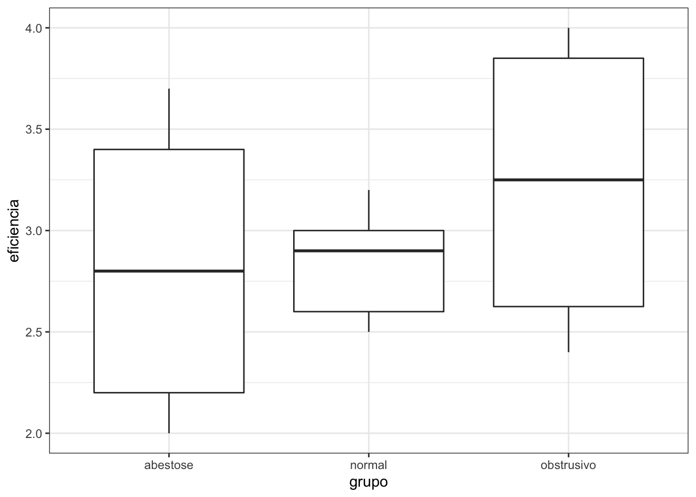

Estatística Não-Paramétrica
Métodos usados quando não podemos assumir normalidade ou alguma outra distribuição de probabilidade em nossos dados.
x <- c(2.9, 3.0, 2.5, 2.6, 3.2) # normal subjects
y <- c(3.8, 2.7, 4.0, 2.4) # with obstructive airway disease
z <- c(2.8, 3.4, 3.7, 2.2, 2.0) # with asbestosis
dados <- data.frame(eficiencia = c(x, y, z),
grupo = c(rep("normal", length(x)),
rep("obstrusivo", length(y)),
rep("abestose", length(z)))
)
kruskal.test(eficiencia ~ grupo,
data = dados)##
## Kruskal-Wallis rank sum test
##
## data: eficiencia by grupo
## Kruskal-Wallis chi-squared = 0.77143, df = 2, p-value = 0.68library(ggplot2)
theme_set(theme_bw())
library(reshape2)
ggplot(dados, aes(x = grupo, y = eficiencia)) +
geom_boxplot()